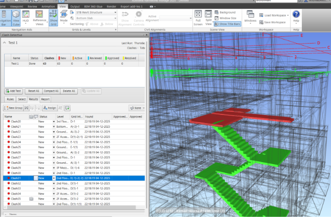
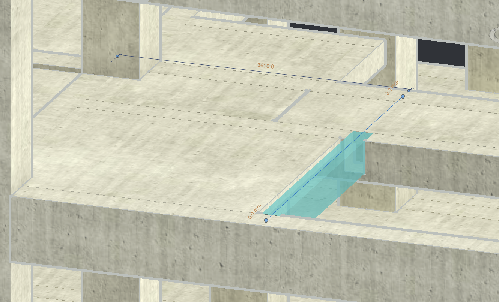
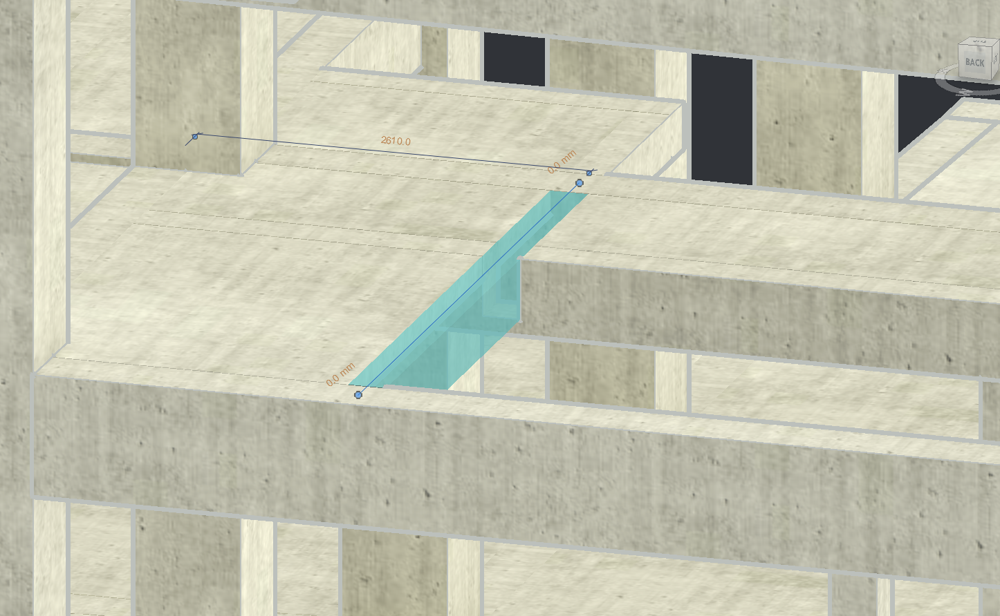
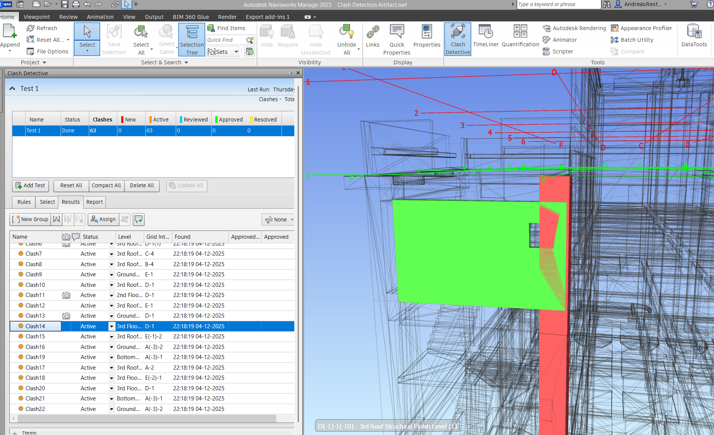
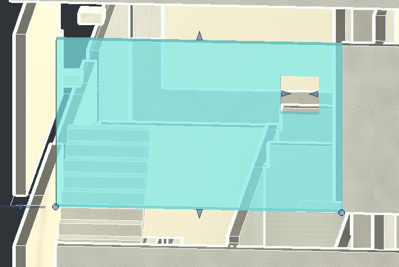
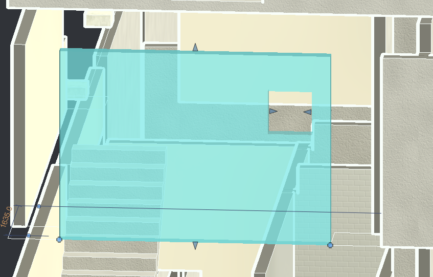
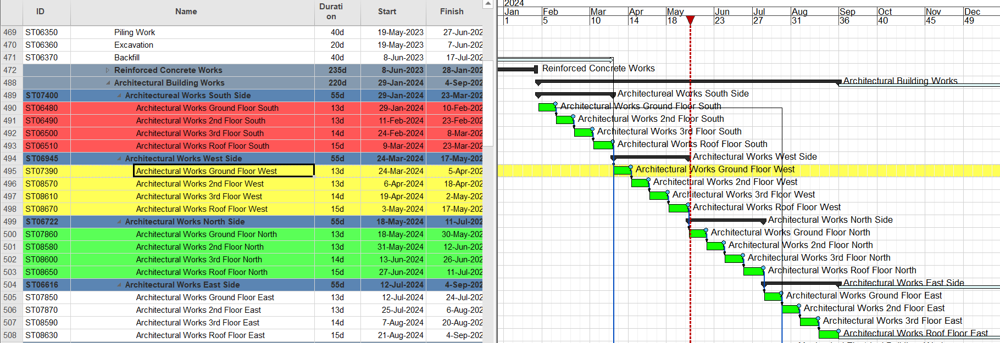

Appendix III
Appendix III.1 The complete overview of stakeholders, Role in BIM Process, Datasets involved and their related applications/information systems
| Stakeholder | Role in the BIM Process | Datasets Used | Datasets Produced | Applications / Information Systems |
|---|---|---|---|---|
| Contractor-BIM Team: Architectural BIM Modeler | • Creates and updates the architectural design model (LOD 300–350). • Ensures elements follow BEP naming, templates, and shared coordinates (JSS20 benchmark). • Provides architectural references for rooms, doors, windows, façades. | • Architectural design drawings (DWG/PDF). • AR datasets: walls, floors, roofs, openings, façade, stairs, room data. | • Architectural 3D Model (LOD 350). • Updated architectural families (doors, windows, sanitary, furniture). • Room naming dataset. • AR model for federation & clash detection. | • Autodesk Revit (authoring). • ACC Docs (CDE). |
| Contractor-BIM Team: Structural BIM Modeler | • Produces structural 3D model (LOD 300–350). • Models foundations, slabs, beams, columns, structural stairs. • Ensures alignment with architect’s grids and shared coordinates. | • Structural drawings (DWG/PDF). • Structural element codes for beams, columns, levels. | • Structural 3D Model (LOD 350). • Updated structural families (beams, columns, slabs). • Structural level dataset. • Clash-ready structural model for federation. | • Autodesk Revit (authoring). • ACC Docs (CDE). |
| Contractor-BIM Team: BIM Coordinator – Architecture / Structure | • Validates AR + STR models comply with BEP naming, templates, LOD. • Manages file workflow: WIP → Shared → Published. • Performs integrity checks, LOD checks, and prepares models for consultant review. | • AR, STR models from WIP. • Contract drawings | • Reviewed models for Shared folder. • Coordination comments, clash issues, revision notes. • Submission packages for supervision consultant. | • ACC Docs (workflow & approvals). • Navisworks (clash checking). |
| Supervision Consultant-BIM Team: BIM Manager / Coordinators | • Reviews and approves 3D models submitted by contractor. • Ensures compliance with Employer requirements & ISO 19650. • Reviews clash results and approves final federated model. | • Submitted AR + STR models. • Clash reports. • Transmittals & model packages (ACC). | • Approval/rejection decisions. • Verified models for publication. • QA/QC reports and review comments. | • ACC Docs (review & approval). • Navisworks (model review). |
| Contractor-BIM Team: BIM Coordinator (Federation Lead) | • Combines AR + STR + MEP models into federated model. • Runs clash detection, prepares clash reports, assigns issues. • Ensures all disciplines align to benchmark | • Individual discipline models (.RVT). • Clash rules & coordination matrix. • Survey benchmark. | • Federated BIM Model (.NWD/.NWC). • Clash reports. • Coordination issue list. | • Navisworks (federation). • ACC Docs (CDE). |
| Contractor-BIM Team: BIM Document Controller | • Uploads, tracks, and manages BIM files in the CDE. • Enforces folder structure (WIP → Shared → Published) as required. • Manages transmittals and versioning. | • All submitted models, PDFs, NWDs. • Approval workflows from ACC. | • Organized CDE structure. • Transmittal logs. • Published model packages. | • ACC Docs (CDE). |
| Supervision Consultant-BIM Team: BIM Manager (QC Focus) | • Oversees BIM workflows and BEP compliance. • Conducts model quality control (visual check, standards check, integrity check). | • QC reports. • Standards check results. • Coordination models. | • Approved coordination models. • QC compliance records. | • ACC Model Checker. • ACC Docs. • Revit (model review). |
| Contractor-Project Team: Construction - Scheduler/Planner | • Uses AR + STR models for construction planning, sequencing, and 4D simulation. • Ensures model reflects practical buildability and site constraints. | • 4D dataset (model elements linked to schedule). • Construction schedule. | • 4D simulation sets. • Sequencing outputs for site teams. | • Synchro Pro (4D simulation). • MS Project (schedule). • Navisworks (4D review). |
| Contractor-Project Team: Construction - Site Engineer | • Uses latest coordinated BIM models for on-site execution. • Verifies buildability and checks construction details. | • Latest approved AR + STR federated model. • Approved shop drawings. | • As-built updates (field markups). | • Navisworks Freedom / Manage. • ACC Docs (latest approved documentation). |
| Owner / Client | • Reviews and approves final coordinated deliverables. • Confirms compliance with project requirements. | • Final coordinated AR + STR models. | • Approval or rejection of final deliverables. | • ACC Docs (review & approval). |
Appendix III.2 Clash detection 1: The upper end of the stair clashed with the slab

Appendix III.3 Resolution: slab edge repositioned/pulled back to align with adjacent slab

Before modification

After modification
Appendix III.4 Clash detection 2: wall and window opening clash with the structure

Appendix III.5 Resolution: wall and window opening shifted to avoid obstruction with the column


Appendix III.8 Schedule modifications (before/after)

